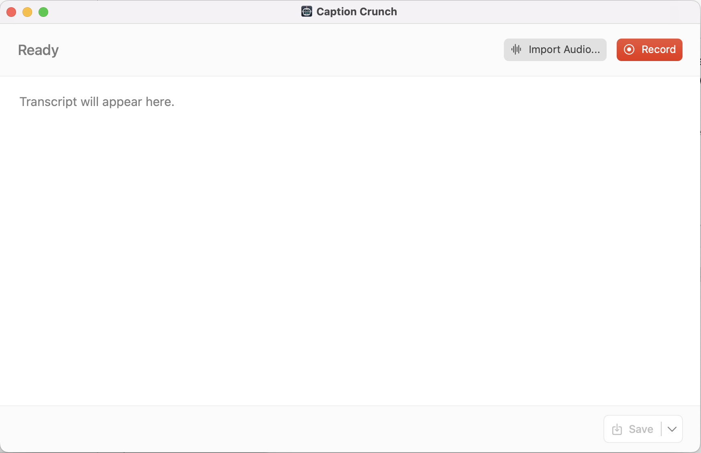
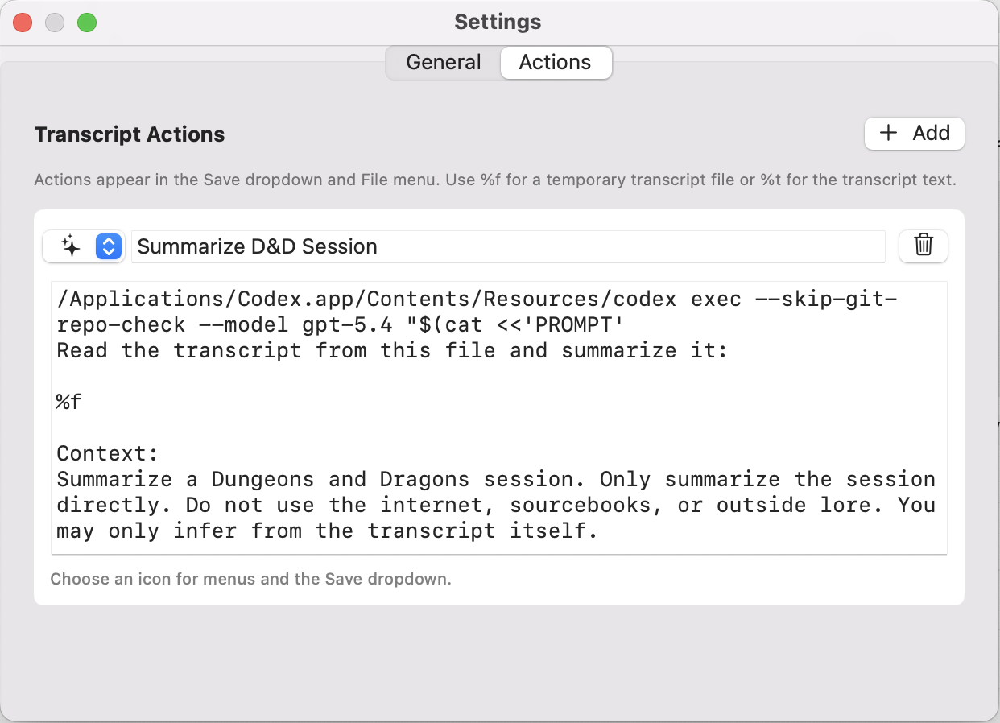

Caption speech live
Pick an input, press Record, and watch a readable transcript appear as people talk.
Local-first Mac captioning
Caption Crunch turns speech from a chosen Mac input device into readable live captions, and can transcribe existing audio or video files into a copyable transcript.
Built-in transcription stays on your Mac. No cloud upload. No internet connection required.

Pick an input, press Record, and watch a readable transcript appear as people talk.
Transcribe common audio and video files without waiting for realtime playback.
Audio and transcript text stay on your machine unless you run a custom action that sends them elsewhere.
What it does
Caption Crunch is built for tabletop games, calls, streams, interviews, accessibility experiments, and any moment where you want captions without opening a full meeting app.
Transcript actions
Add up to nine custom actions for AI summaries, cleanup scripts, publishing workflows, or anything else you can express as a shell command.

%fWrite transcript to a temporary text file and pass the file path.%tPass the transcript text directly as a shell-quoted string.%aPass the recording or imported media file path when available.Routing app audio
To caption another app in realtime, route that app into a virtual input device and select it in Caption Crunch. Loopback by Rogue Amoeba is recommended for this kind of app-to-input routing.
Download
Download the latest DMG, drag Caption Crunch to Applications, and choose your preferred input device.